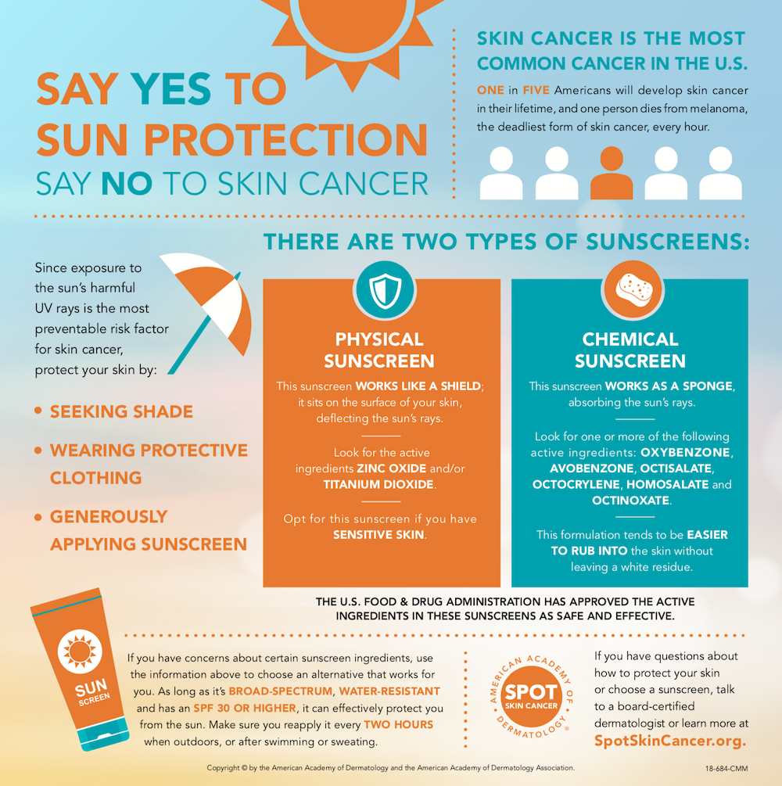

The Aging Skin
It is not a cosmetic issue,
it is a health matter.
As we age, the structure and function of our skin deteriorate.
Intrinsic Aging, or chronological aging, is a genetically controlled natural process.
Extrinsic Aging, on the other hand, is directly related to environmental and lifestyle factors: climate, pollution, stress, diet, exercise, smoking and more. These factors are largely controllable.
The leading cause of extrinsic aging is sun exposure or ultraviolet radiation (UVR), often referred to as photo- aging which accounts for 90% of visible skin aging. Photo-aging clinical signs include dry skin, rough texture, loss of elasticity and increase laxity of the skin, irregular pigmentation, wrinkles and vascular lesions.
UV Radiation is the part of the electromagnetic (light) spectrum that reaches the earth from the sun. There are three classifications of UV light: UVA, UVB, and UVC.
UVC rays are absorbed by the ozone layer and do not reach the earth, however UVA and UVB rays penetrate the atmosphere and play an important role in premature aging, uneven pigmentation and skin cancers.
UVB rays penetrate the epidermis - the outer layer of the skin - and activate a cascade of biochemical reactions. These rays are more intense in summer, between 10am and 2pm, they cause sunburn and direct DNA damage. With constant and prolonged exposure to UVB rays, precancerous lesions or a skin cancer may develop.
UVA rays penetrate deeper into the dermis and are the major factor in the development of skin aging and wrinkles. UVA rays cause indirect DNA damage and immune suppression, contributing to the development of skin cancer, along with UVB. Prolonged exposure to these rays affect collagen and elastin fibers and causes fine lines, wrinkles and loss of elasticity.
It is important to know that UVA is present in equal intensity all year, from the morning to the evening, even on cloudy, rainy and snowy days and passes through ordinary glass indicating that being indoors does not protect you from UV damage.
Prevention of skin damage from the sun should be the most important aspect of your daily skin care plan.
The American Academy of Dermatology recommends to apply a generous amount (about one ounce for an adult) of a water resistant, broad spectrum sunscreen that protects from both UVA and UVB, with an SPF 30 or higher. preferably containing Zinc oxide/titanium dioxide. All exposed skin must be covered with the product and should be applied 15 minutes before sun exposure and reapplied every 2 hours, when outdoors, or after swimming or sweating. Other sun safe practices are limiting sun exposure, seeking shade, wearing sun protection clothing, hat and sunglasses.
